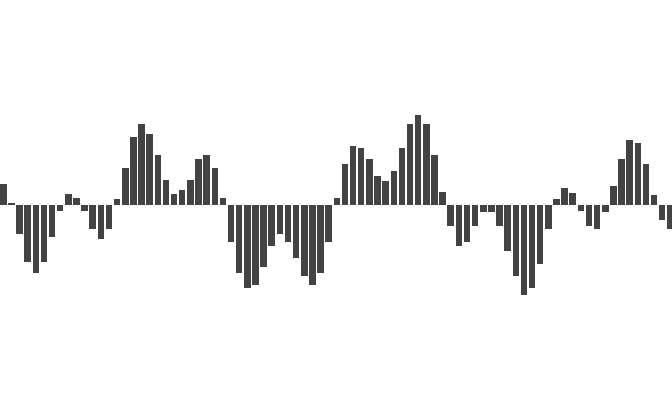
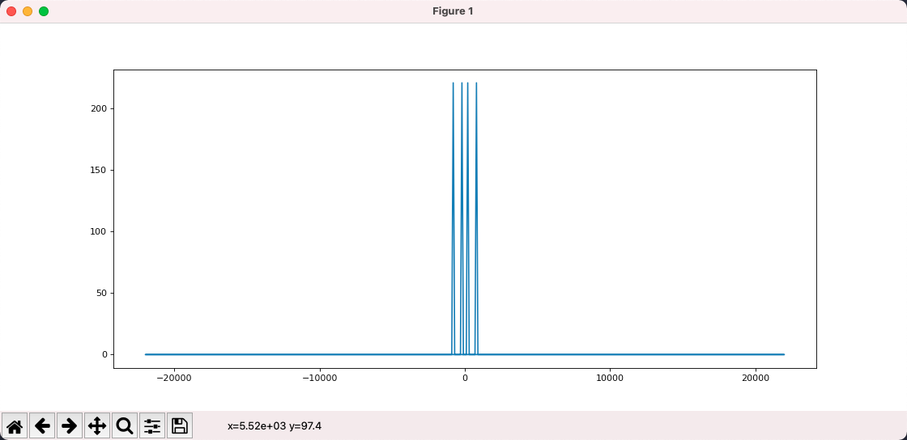
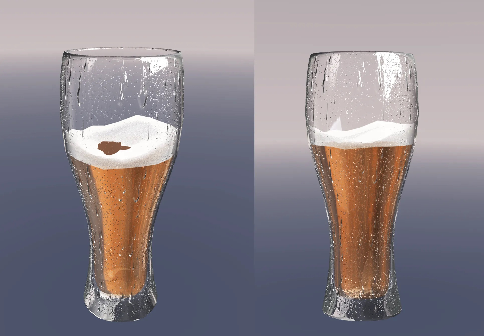

Sound is produced by the vibration of an object, and this vibration is transmitted through a medium to our ears causing the eardrum to vibrate so that we can hear the sound.
We can describe vibration in terms of a waveform, where the horizontal axis is time and the vertical axis is the displacement of the vibration, i.e., the distance from the origin.
The two key properties of vibration are frequency and amplitude. Frequency refers to how many times a second it vibrates, which corresponds to the pitch of the sound, the higher the frequency the sharper and harsher the sound.
Amplitude is the maximum displacement value, which corresponds to the volume, the greater the amplitude, the louder the sound.
The above figure is a sine wave plotted with matplot, which shows that it oscillates 2 times in 0.01s, so the frequency is 200 and the amplitude is 1.
from matplotlib import pyplot as plt
import numpy as np
def sin_wave(hz):
x = np.linspace(0, 0.01, 1000, endpoint=False)
y = np.sin(x * hz * 2 * np.pi)
plt.plot(x, y)
plt.xlabel("Time")
plt.axhline(y=0, color='k')
plt.show()
sin_wave(200)
This simplest waveform corresponds to a sound called pure tone, which, as the name suggests, is very simple and pure.
This is the sound at 800hz, and you can clearly feel that the sound is much sharper.
The sound we hear in the real world is not a pure tone, but the result of superimposing various pure tones.
In the picture below, blue is 200hz, yellow is 800hz, and green is the result of their superposition and is no longer a pure tone.
To summarize.
We can represent a sound as a waveform, where the X-axis is time and the Y-axis is the displacement of the vibration
The simplest sine wave corresponds to a sound called pure tone
The sounds we hear in daily life are the result of superposition of various pure tones
Tip: LIGHTNOTE is great website to learn music theory. It introduces basic music theory in an interactive format, including scales, chords, twelve mean meters, etc.
Sampling
Because sound is a continuous function over time, there are an infinite number of values in any given interval, and there is no way to store an infinite amount of data in a computer.
To store it, we need to discretize it into a discrete sequence, and the specific way to do this is to sample it, using a fixed interval to evaluate the function.
This is the original sound.
This is the result after sampling. 
By sampling, we turn an endless sequence into a finite sequence where each value is called a sample so that it can be easily stored in the computer.
There are two key parameters of sampling, which are sampling frequency and sampling depth.
Sampling frequency refers to how many times per second a sample is taken. Obviously, the higher the sampling frequency, the more samples, the larger the amount of data, and also the closer to the original sound.
Sampling depth refers to how many bits are used to store the sampled values, the more bits are used, the more detailed the restored sound is, and the color depth of the picture is the same reason.
Suppose we use a sampling depth of 16bit and a sampling frequency of 44100, then a one-second sound becomes an int16 array of 44100.
After we get the array of sample values, how to store the array is the domain of encoding. We can store it directly, or we can use some algorithm to compress it and store it later. There are various ways to do this, corresponding to various audio formats, such as MP3, AAC, WAV, and so on.
The AAC and MP3 formats are lossy, which means that when stored and then read out, there will be some differences between the samples and the original, but these differences are subtle and can be ignored. The characteristic of lossy is to reduce the file size significantly without affecting the final playback effect.
WAV, on the other hand, is lossless in the sense that whatever is input is what is read out, but naturally the disadvantage is that it is much larger.
We can read WAV audio through scipy.
import scipy.io.wavfile as wav
rate, all_samples = wav.read("xxx.wav")
print(rate, len(all_samples), all_samples.dtype)
# 44100 10639873 int16
# Above are: the sample rate, the total number of samples, and the type of sample value
# int16 means that each sample is a 16bit integer
print(all_samples[:20])
# [-41 -51 -49 -41 -28 -15 -20 -33 -32 -38 -54 -54 -44 -30 -8 10 11 2
# -14 -36]
# the sample is a set of numbers
As we can see, the sampling frequency is 44100 and there are 10639873 samples, which are stored using int16.
Fourier Transform
Given a 200hz waveform and an 800hz waveform, calculating the result after superimposing them is very simple.
But what if the result is given after superposition?
With the Fourier transform, we can disassemble a composite waveform into the simple waveforms that make it up.
We can think of the Fourier transform as a function whose input is N real numbers, representing sampled values, and whose output is N complex numbers, representing components at different frequencies. Here we ignore the real and imaginary parts of the complex numbers and only care about its mode, i.e., the absolute value.
from scipy.fft import fft, fftfreq
# This is the sample value that will be transformed: [0, 1, 2, 3, 4, 5, 6, 7]
samples = np.arange(8)
# The result after FFT
y = fft(samples)
for i in y:
print(i)
# The result of the transformation is 8 complex numbers
# (28-0j)
# (-3.9999999999999996+9.65685424949238j)
# (-4+4j)
# (-4+1.6568542494923797j)
# (-4-0j)
# (-4-1.6568542494923797j)
# (-4-4j)
# (-3.9999999999999996-9.65685424949238j)
# x is the frequency corresponding to each of the above results
# Here the first argument of the fftfreq function is the number of samples
# The second parameter is the inverse of the sampling rate, which we assume to be 8
x = fftfreq(len(samples), 1 / 8)
print(x)
# [ 0. 1. 2. 3. -4. -3. -2. -1.]
# Here it means that y[0] corresponds to a frequency of 0 and y[1] corresponds to a frequency of 1
# What does it mean to have a negative frequency? [ignore]
The above code constructs a Fourier transform of 8 numbers and assumes that the set of samples is sampled using a sampling rate of 8.
The result of the transform is 8 complex numbers, which correspond to 8 frequencies, and we can see that the positive and negative frequencies correspond to the same transform result, i.e. the transform result is symmetric.
The result obtained above is not very meaningful, because the input is not very meaningful. Now let's use the Fourier transform to process the waveform after the 200hz+800hz superposition and see if it can be restored to 200hz and 800hz.
import numpy as np
from matplotlib import pyplot as plt
from matplotlib.pyplot import figure
from scipy.fft import fft, fftfreq
figure(figsize=(14, 6), dpi=80)
DURATION = 0.01
SAMPLE_RATE = 44100
def gen_sine_wave(freq):
x = np.linspace(0, DURATION, int(DURATION * SAMPLE_RATE), endpoint=False)
y = np.sin(x * freq * 2 * np.pi)
return y
hz200 = gen_sine_wave(200)
hz800 = gen_sine_wave(800)
# ampling data after superposition
# Here each sample is not int16 but float
total = hz200 + hz800
y = fft(total)
x = fftfreq(len(total), 1 / SAMPLE_RATE)
plt.plot(x, np.abs(y))
plt.show()
As we can see in the figure, firstly, the output is symmetrical to the left and right, so we ignore the negative frequencies and focus only on the positive ones.
Secondly, the Fourier transform tells us that the input signal consists of 2 frequencies, which can be seen as 200 and 800 when the program is running with the mouse over it. i.e., by using the Fourier transform, we break up the composite waveform into a simple waveform.
Or, by Fourier transforming a signal, we split it into a set of sine waves of different frequencies, transforming it from the time domain to the frequency domain. The signal is still the same signal, but we look at it from a different perspective.

To summarize.
The Fourier transform is a function in which the input string of numbers represents the sample values and the output string of complex numbers represents the frequency components
The specific frequency of each number can be calculated based on the number of samples and sampling frequency
We do not care about the direction of the complex numbers, we only care about the mode of the complex numbers
The Fourier output is left-right symmetric, so only half of the information is of value
Since the output is symmetric, only half of the information has value, so there is a variant called rfft, which returns only half of the information and can be computed faster.
import numpy as np
from scipy.fft import rfft, rfftfreq
SAMPLE_RATE = 8
samples = np.arange(8)
y = rfft(samples)
x = rfftfreq(len(samples), 1 / SAMPLE_RATE)
print(x)
# [0. 1. 2. 3. 4.]
for i in y:
print(i)
# Comparing with the previous output of fft/fftfreq, the results are the same, except that the symmetric redundancy information is removed
# (28+0j)
# (-3.9999999999999996+9.65685424949238j)
# (-4+4j)
# (-4+1.6568542494923797j)
# (-4+0j)
Audio visualization
Each bar that beats with the music corresponds to a frequency or a set of frequencies, while the height of the bar is the component size of the frequency, both of which are given by the Fourier transform.
Now the remaining question is what is the input? We can't take all the samples of a song as input to the Fourier transform, if we did that we would only get one copy of the frequency data.
We want the frequency data to change with the music, so we choose a window size (FFT_SIZE) of, say, 2048. As the music plays, we select 2048 samples from the current playing position each time and then perform the Fourier transform.
Now our initial audio visualization scheme is defined.
Parse the audio file to get allSamples
In each plot, select FFT_SIZE samples starting from the current sample
Perform Fourier transform on these samples
Modulate the complex numbers obtained from the transform
Transform the result to 0 ~ 1 and plot it
Next, let's implement a simple audio visualization tool using the Web.
1，First, parsing the audio file to get allSamples we can use the WebAudio API.
// Get the binary data of an audio file
const ab = fetch("xxx.mp3").then(res => res.arrayBuffer())
// New WebAudio context
const audioCtx = new AudioContext()
// Parse arrayBuffer
const audioBuffer = audioCtx.decodeAudioData(ab)
console.log(audioBuffer)
// AudioBuffer {length: 10639872, duration: 241.2669387755102, sampleRate: 44100, numberOfChannels: 2}
// duration: 241.2669387755102
// length: 10639872
// numberOfChannels: 2
// sampleRate: 44100
// [[Prototype]]: AudioBuffer
// Generally audio is available in multiple channels for stereo playback
// Here we simplified the question by select the first channel
const allSamples = audioBuffer.getChannelData(0)
// allSamplesis the array of samples we want, each sample value is a float number
console.log(allSamples.slice(0, 10))
// Float32Array(10) [0, 0, 0, 0, 0, 0, 0, 0, 0, 0]
2，Next, we use requestAnimationFrame to draw.
Each time we draw, we need to get the current playback position. audioBuffer has the total time of the audio, through audioCtx.currentTime we can find out the current playback time, and divide the two together to get the playback position.
// On User Click
const onPlay = () => {
// Record the start time
const startTime = audioCtx.currentTime
const draw = () => {
requestAnimationFrame(draw)how long have been played
// the playing time (in seconds)
const cur = audioCtx.currentTime - startTime
// the percentage of playing progress
const per = cur / audioBuffer.duration
const startIndex = Math.floor(allSamples.length * per)
// From startIndex get FFT_SIZE samples which are to be Fourier transformed
const samples = allSamples.slice(startIndex, startIndex + FFT_SIZE)
}
requestAnimationFrame(draw)
}
3，After FFT, we get 1025 complex numbers, and modulo these complex numbers, we get 1025 real numbers.
// Define Complex Class
class Complex {
constructor(real, imag) {
this.real = real
this.imag = imag
}
abs() {
return Math.sqrt(this.real * this.real + this.imag * this.imag)
}
}
const rfft = (samples) => {
const f = new FFTJS(samples.length)
const out = f.createComplexArray()
const N = samples.length / 2 + 1
f.realTransform(out, samples)
const value = []
for(let i = 0; i < N; i++) {
value[i] = new Complex(out[2*i+0], out[2*i+1])
}
return value
}
// We get a set of real nums.
const y = rfft(samples).map(c => c.abs())
4，The next step is to map these numbers to the 0 ~ 1 interval.
const result = y.map(v => (v + 20) / 80)
5. Once we have a set of numbers from 0 to 1, we can use Canvas to draw.
const W = 800 // canvas width
const H = 600 // canvas height
const draw = (spectrum) => {
ctx.clearRect(0, 0, W, H)
const barWidth = W / spectrum.length
for(let i = 0; i < spectrum.length; i++) {
const v = spectrum[i]
const x = i * barWidth
const height = v * H
const y = H - height
ctx.fillRect(x, y, barWidth, height)
}
}
1. Introduction: the process to create art assets in mobile development
User Interface (UI) is an important part of any game, and it is the medium through which the game and the player interact. UI enables the conversion and transfer of game-related information from the game's internal form to a form that is understandable and acceptable to the player. In the game field, UI is referred to as UI in Unity 3D and UMG in UE.
There are several key roles involved in this process, including game planning, interaction design, 2D art design, refactoring, and client application. Each role takes the output of the previous role and produces an output for the next role, in order to create a UI that can be presented to the public.
Planning the game. This involves deciding what information should be displayed.
Designing the user interface. This involves creating the look and feel of the game.
Creating 2D art for the game. This involves creating the visual elements of the game.
Refactoring the game. This involves making sure the game works properly by connecting the game logic to the user interface.
Programming the game. This involves connecting the game logic to the user interface and displaying the necessary business information.
2. Motivation: maximize efficiency and create top-notch art assets without repeating work
When creating 2D artwork for a game project, the process can be broken down into several steps. These steps include exporting the artwork, cutting it into layers, importing the layers into the game project, retrieving the image resources in the project, and exporting it to the client application. This process is extremely labour-intensive and has no room for technological upgrading. Additionally, the artwork requires the maintenance of a list of resources already available to the project, which can lead to resource redundancy. Manual restoration is also prone to deviations in detail that do not match the art design. For example, if the resources are scaled up by 200%, it can be difficult to distinguish between them.
Many people who create mobile games face similar challenges. To address these issues, I looked into the workflow solutions available today. PSD2UMG - the existing workflow solutions
However, these approaches all have drawbacks.
In order to make the UI recovery process more efficient., we need to have a new solution automate much of the tedious and repetitive work, while also providing a high-quality result. Compared to traditional workflows, this solution would drastically reduce the amount of time needed to complete the process, while also ensuring that the artwork is restored accurately and that there are no extra resources in the project.
3. Solution
When creating artwork for a project, the resources may be changed in some way. This transformation makes it difficult to use traditional image recognition and image retrieval to match the resources used in the game. To solve this problem, we developed a perceptual hash to identify the mapping relationships between the original and transformed resources.
3.1 Perceptual hash
3.1.1 Traditional hashing
Hashing is a technique used in traditional cryptography to create a fixed-length output for any given input. This output, known as a hash, is a digestible representation of the original input. Traditional cryptography is designed to be one-way and collision-resistant, meaning that the original input cannot be inferred from the hash and that two different inputs cannot produce the same hash. This sensitivity to bit changes in the input data means that even a small change in the input can result in a seemingly random change in the output. This makes traditional cryptographic hashing algorithms unsuitable for digital image retrieval and matching, as operations such as changes in image format, scaling, rotation, or resolution can lead to drastic changes in the hash value, even though the content of the image remains the same.
Here are the results of traditional hash functions:
Original Value
Hash Value
FatherAndMotherILoveYou
d1f3bb50ec8144adbc23fda1ba709dbb
FatherAndMotherILoveyou
4e8c13234d9aa2a8b45b8d411fb9ff39
fatherAndMotherILoveYou
6bcf71c8b5c9395f70c18393b4284202
The hash of the file cannot be used to find the resources of the game easily, because the resources have been changed in various ways. If the hash is used directly, it is likely that the matching rate will be low or there may not be a match at all.
3.1.2 Perceptual hashing
Perceptual hashing is a technique that uses the principles of cryptography to create a fixed-length binary sequence, called a perceptual hash value, for a given digital image. This value is designed to remain the same or vary within a small threshold, even if the image format changes, as long as the content information stays the same. This allows for the comparison of two images to determine if they are perceptually similar. The concept was first proposed in 2001 by Ton Kalker in a paper on Digital Watermarking. [TODO add Reference]
Our solution proposes a hashing algorithm called Mix-Hashing which is based on traditional perceptual hash functions and structural information. It is supplemented by luminance and channel components, making it robust to image scaling, rotation, nine-pattern stretching, and three-pattern stretching which are common features of in-game resources.
3.1.3 Structure-based perceptual hash algorithm
The AVG-Hashing algorithm is a computational method that quickly generates a grayscale average based on statistical features of an image. This process only requires a few pixels to be extracted, making it a very efficient way to generate a perceptual hash. AVG-Hashing is a process for generating a unique perceptual hash sequence from an image. It involves normalizing the image to an 8*8 size, graying out the thumbnail, calculating the average grayscale value of all pixels, extracting features for all pixels and binarizing them, and finally generating the perceptual hash sequence. The sequence is collision-resistant, meaning it is unique to the image.
Due to device performance and calculation limits, we cannot do physical simulation (refraction and reflection) realtime, and most glass materials rendering is basically offline. Hence I come out a very low-overhead way to implement the glass material in Unity3D. This solution is very flexible and portable. It can be applied to PBR only by replacing the light reflection and environment reflection.
2. Motivation: Low-cost glass material rendering shader
Making the glass materials in mobile development is difficult, because the glass contains many features: reflection, refraction, thickness, etc. These characteristics require abundant calculations when rendering in real-time, however due to device performance limits, even in some console game, the render effect is not ideal. Here are realtime screenshots from some console game, including Final Fantasy VII Remake and Red Dead Redemption 2. As we can see in these screenshots, these glasses are not perfect - they miss some refraction features. Console Game Glass Effects
3. Problem
The glass itself is transparent, and there are two main points that affect the texture of the glass:
Reflection: glass reflects highlights in the environment.
Refraction: the glass thickness influences its refractive level. The thicker, the greater. Note here: the thickness would not influence the refractive index but the refractive visual effect.
The most difficult part is to figure out the refractive effect. However, in terms of human vision, strong refraction will interrupt the continuity of background. In position with strong refraction effect, things behind can no longer be seen clearly, which will make people feel that 'this area is not completely transparent' . You can only see a blurring background through the glass.
So I mainly start from this point to simulate the refraction visual effect. In order to improve the rendering performance, I use MatCap to sample the environment texture. I have some usage tips at my blog about how to use MatCap. - MatCap. You can check it out if you'd like. However, it is very flexible. You can replace PBR's ibl environment and realtime highlights based on your needs.
4. Code
Complete code in C# based Unity3D is at Github.
4.1 Environmental Highlights Reflection
The reflection part is relatively simple. You can process a glass highlight MatCap texture to handle the highlight reflection of the wine glass. On the left is the direct output of MatCap, and on the right is the output of MatCap as alpha.
_SpColor("Sp Color", Color) = (1.0,1.0,1.0,1.0)
// make a texture for highlight part to control the reflection visual effect
float3 spmatCap= tex2D(_CapTex,matCapuv);
spmatCap *=_SpColor.rgb
o.color.rgb = spmatCap;
o.color.a = spmatCap.r;
4.2 Glass RefractionRefraction
4.2.1. Glass refraction MASK
Before making refraction effects, first we need to calculate the range of refraction and determine the refraction area where refraction needs to be used.
A. The thickness range of the glass itself
We need to pre-process the glass thickness of the glass itself. For example, the bottom of the cup and the mouth of the glass.
The thickness here can be stored in 2 ways for output:
Preprocess a thickness texture.
Output by painting to a vertex color.
float3 thicknessTex= tex2D(_MaskTex, i.uv);
float sThickness = thicknessTex.r * i.color.r; //Solid glass part of the cup
I store the texture in the R channel, and the other channels can be left for later.
In this way we can get a manually controllable thickness range.
B. Glass side thickness
The edge part is calculated here using Finier.
_FenierEdge("Fenier Range", Range(-2, 2)) = 0.0
_FenierIntensity("Fenier intensity", Range(0, 10)) = 2.0
//~~~~~~~~~~~~~~~~~~~~~~~~~~~~~~~~~~~~~~~~~~~~~~~~
float3 V = normalize(_WorldSpaceCameraPos - i.worldPos);
float NoV = dot(N,V);
float EdgeThickness (in float NoV)
{
float ET = saturate((NoV-_FenierEdge)*_FenierIntensity);
return ET;
}
By adjusting the parameters we can get the edge range of the cup.
Finally, combining the two ranges together, we get the complete glass refraction area.
_FenierEdge("FenierRange", Range(-2, 2)) = 0.0
_FenierIntensity("Fenierintensity", Range(0, 10)) = 2.0
//~~~~~~~~~~~~~~~~~~~~~~~~~~~~~~~~~~~~~~~~~~~~~~~~
float3 V = normalize(_WorldSpaceCameraPos - i.worldPos);
float NoV = dot(N,V);
float3 thicknessTex= tex2D(_MaskTex, i.uv) ;
float sThickness = thicknessTex.r * i.color.r; //Solid glass part of the cup
float fThickness = thicknessTex.g;// Thickness of cup Fenir
float EdgeThickness (in float NoV ,in float eThickness )
{
fThickness = (eThickness -0.5)*0.5;
float ET = saturate((NoV-_FenierEdge+fThickness)*_FenierIntensity);
return 1-ET*eThickness ;
}
4.2.2. Simulate glass refraction
We need to use MatCap with a new UV sampling to simulate glass refraction, because we need to use the refraction mask obtained above to distort this MatCap texture.
However, you can use the same MatCap texture as the highlight, or you can create a new one separately. I am lazy and use the same one for the highlight
// Add a custom color parameter to _BaseColor
// then you can control the glass body color
float3 RFLerpColor (in float3 rfmatCap,in float Thickness)
{
float3 c1 = _BaseColor.rgb*0.5;
float3 c2 = rfmatCap*_BaseColor.rgb;
float cMask = Thickness;
Return lerp(c1,c2,cMask );
// Here you can also *v.color.rgb to control the local color of the glass with the vertex color to create a stained glass effect
}
After simulating glass refraction, we need to output the refraction MASK we made before as alpha, and the whole refraction part is finished.
Finally, the reflection and refraction are combined to output the whole effect. We are basically done on this part.
float alpha = saturate(max(spmatCap.r*_SpColor.a ,Thickness)*_BaseColor.a);
//_SpColor is a separate color control for highlight colors
// The alpha calculation here is for that the transparency of the highlights can be controlled separately, as well as the transparency of the overall cup
col.rgb = rfColor+spColor; //combine reflection and refraction
col.a = alpha;
4.2.3. Add normal details
Because the accuracy of the model in the game is relatively low, in order to improve the surface details, we can also add a normal map. This allows for richer representations.
Because the above refraction MASK and MatCap mapping are calculated based on N (normal). So here we only need to calculate the normalMap.
o.worldTangent =normalize(UnityObjectToWorldNormal(v.tangent));
o.worldBinormal = cross(o.worldNorm, o.worldTangent) * v.tangent.w;
o.uv.zw = TRANSFORM_TEX(v.texcoord.xy,_NormalTex) ; //(give the normals separate UVs so that you can use detail normals.
You can also use multiple sets of normal textures to blend)
o.uv.xy = TRANSFORM_TEX(v.texcoord.xy,_MaskTex) ;
//------↑VSout----------------------------------------------------------------------------------------------
void GetNormal(v2f I, inout float3 N)
{
float4 normalTex = tex2D(_NormalTex, i.uv.zw);
float3 normalTS = normalize(UnpackNormal(normalTex));
float3x3 tbn = float3x3(i.worldTangent, i.worldBinormal, i.worldNorm);
N = normalize(mul(normalTS, tbn));
}
PS. If you need a more realistic visual effect, you can use an RT to create the effect of the objects behind being refracted and distorted, but in fact, you don't need to add it at all.
Now we are done our job on realizing glass material. I will discuss more about its usages and give some its application examples in Discussion Part.
5. Results
All the effect pictures are real-time screenshots in Unity3D, no Tone mapping. 
champagne beer
6. Discussion: More advanced usages about glass material
6.1 Frosted glass
In fact, frosted glass is very, very simple under MatCap, we only need to take the texture of MatCap into Photoshop for blurring.
If it is IBL, Phone, GGX and other high-light reflections, it can be processed directly according to the roughness method.
6.2 Multiple layers of glass and liquids
Now I have only done the outer surface of the cup, and the inside of the glass has not been processed yet.
Take a look at the cup model first, here are some points to note.
I divided the cup model into 3 parts:
Cup exterior
Cup inner wall
Liquid in a glass
The reason for distinguishing the inner and outer walls is mainly to solve the problem of wrong front-back relationship caused by translucent sorting.
Here we create a new shader, or we can copy a copy of the previous outer wall shader and assign it to the inner wall model of the cup.
Inner wall material: It is recommended to adjust the parameters to remove the edge thickness, unless you are making a double-layer glass. The bottom part of the cup is controlled by the thickness mask (texture and vertex color are fine).
6.2.1 Add liquid material
Create a new liquid shader in the same way. Modify the color to make water, beer, red wine or other beverages.
Here, the thickness mask map texture is replaced with a small bubble texture. Used to simulate small bubbles in beer.
At the same time, use animation to sample K keyframes for this texture, and add an animation of UV flow. You can make the effect of beer bubbles flowing.
6.2.2 About Render Hierarchy
Translucent material --- needs to modify the RenderQueue of the internal shader to -1 on the parameters of the external material. Otherwise, the context of the depth will be wrong at certain angles or complex models.
For example: the beer glasses above are rendered in the same order as the RenderQueue.
Cup exterior (3000) ← cup liquid (2999) ← cup interior (2998) Translucent part: In fact, just arrange them in the order we see them. Because when we see the whole cup, we first see the outer wall, followed by the liquid part, and finally the inner wall part. The smaller the value, the higher the rendering priority.
6.3 Glass with cracked ice effect
Use a cracked texture with a vertex color to paint the base thickness of the glass. It can simulate the effect similar to cracked glass.
6.3.1 About the Adaptation of PBR Dynamic Environment
You can mix low-profile colors such as the ball association lighting and LightProbes of the environment with the refraction part, and it can change with the change of the environment color.
7. Caveats
This is not an academic article.
The author guarantee that the implementation has no complicated algorithms, no ray tracing, the solution could be without RT, without post-processing.
This solution is mainly from the visual aspects to achieve the final effect.
I love to help if you have any other question, idea or problem.
This tool is designed for automating merge layers to normalize *.psd file
It is also a supportive tool designed for PSD2UMG plugin
Purpose
The widget trees of Game Engine (UE4 Engine/Unity3D Engine) do not map well with Photoshop file layers, some of PSD features (e.g. the layer set, the mask, and the layer FX) cannot be imported to Game Engine directly.
The tool could merge some group patterns in *.psd into a single layer, in order to eliminate the features that Game Engine do not support.
Of course, you could merge these groups manually. That's way too tedious!
Feature
Currently the tool supports merge the following patterns:
layers with layer pattern
layers with clipping mask
layers with mask
layer patterns with layer set
layer set with mask
empty layer / empty textblock / empty group / empty layer set
layer set naming with prefix "merge"
Note:
The source file wouldn't be changed.
The tool duplicates the source file and generates a new file naming with postfix "_norm".
You will be asked to save normalized new file in somewhere you like.